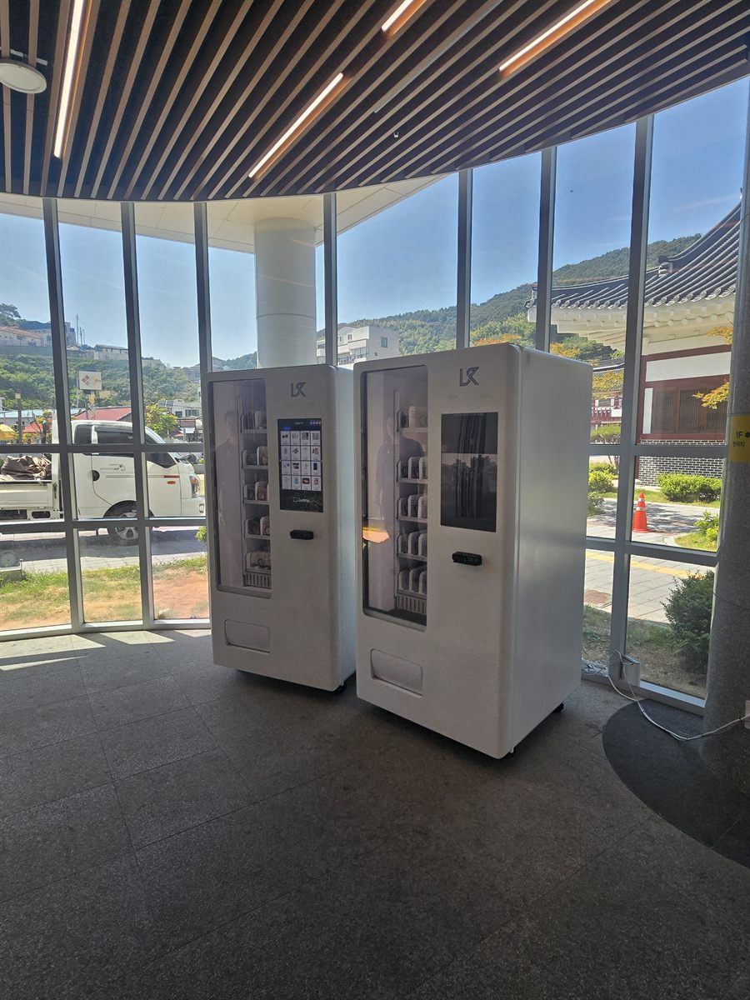

도서관에 자판기를 놓는 일에는 다른 어디에도 없는 조건이 하나 붙습니다. 조용해야 한다는 것입니다. 카페나 사무실이라면 기계에서 "웅—" 하는 소리가 나도 아무도 신경 쓰지 않습니다. 그런데 열람실 문 하나 건너에서 나는 같은 소리는 민원이 됩니다. 냉장 기능이 있는 자판기는 압축기가 몇 분에 한 번씩 돌았다 멈췄다를 반복하는데, 조용한 공간에서는 이 켜지는 순간이 특히 도드라집니다. 그래서 도서관 설치는 품목보다 자리를 어디로 잡느냐가 절반 이상입니다. 사진이 그 결과입니다. 통유리가 둘린 로비 한쪽, 기둥 옆 벽을 따라 두 대를 나란히 세웠습니다.
현장에서 먼저 본 것은 세 가지였습니다. 첫째는 햇빛입니다. 사진처럼 로비 전체가 통유리인 건물은 오후에 직사광선이 길게 들어옵니다. 기계 전면 유리에 해가 정면으로 꽂히면 안에 든 물건이 반사에 묻혀 보이지 않고, 터치 화면도 안 보입니다. 더 큰 문제는 직사광선이 계속 닿으면 냉장 압축기가 쉬지 않고 돈다는 점입니다. 전기도 더 쓰고 소리도 더 납니다. 그래서 해가 들어오는 방향을 보고 기둥이 그늘을 만들어 주는 안쪽을 골랐습니다. 둘째는 열람실과의 거리입니다. 출입구와 대출대, 열람실 문의 위치를 보고 열람실 쪽에서 가장 먼 벽으로 밀었습니다. 셋째는 석재 타일 바닥입니다. 관공서나 도서관 로비는 대형 석재 타일이 많은데, 평평해 보여도 타일 이음매를 걸치면 기계가 미세하게 흔들립니다. 수평계를 올려 다리를 돌려 잡고, 바닥이 긁히지 않게 받침을 깔았습니다. 전원은 로비 벽의 기존 콘센트를 쓰되 조명·청소용 회로와 겹치지 않는 쪽인지 분전반에서 확인했습니다.
관악 도서관 로비에 맞는 구성
두 대를 나란히 둔 데에는 이유가 있습니다. 한 대에 음료와 과자를 섞어 넣으면 보기에는 알차지만, 칸 하나당 들어가는 수량이 줄어 금방 빕니다. 도서관처럼 점심시간과 하교 시간에 사람이 한꺼번에 몰리는 자리에서는 그 몇 시간에 재고가 바닥납니다. 그래서 한 대는 음료 중심, 다른 한 대는 간식 중심으로 갈랐습니다. 음료 쪽은 생수와 캔음료, 페트 음료를 눕혀 깔아 무거운 것을 아래로 보냈고, 간식 쪽은 봉지 과자처럼 가볍고 부피만 큰 것을 위쪽에 앞으로 바짝 당겨 세웠습니다. 가벼운 품목은 스프링이 한 바퀴 돌아도 제자리에 남는 일이 있어서 이게 요령입니다.
품목에서는 냄새와 부스러기가 많이 나는 것을 뺐습니다. 열람실에 들고 들어가면 곤란한 것들입니다. 도서관 자판기에서 가장 잘 나가는 것은 결국 생수·커피·이온음료처럼 책상에 올려 두고 조금씩 마시는 것입니다. 결제는 카드와 삼성페이·카카오페이·네이버페이를 받고 현금함은 넣지 않았습니다. 공공시설에서 잔돈을 채우고 수거하는 일은 담당자 한 분의 일이 통째로 늘어나는 일입니다. 재고와 매출은 휴대폰 앱에서 바로 확인할 수 있고, 특정 칸이 품절되면 알림이 오게 설치 당일에 맞춰 드렸습니다. 건물에 가지 않고도 뭘 채워야 할지 아는 것, 사람이 상주하지 않는 공용부 설치에서는 이게 가장 큰 차이입니다.
도서관 자판기, 좋은 점과 어려운 점
좋은 점부터 적겠습니다. 첫째, 이용자가 건물 밖으로 나갔다 오지 않습니다. 음료 하나 사러 나가면 자리를 비워야 하는데, 로비에 기계가 있으면 그럴 일이 없습니다. 이용자 만족도에 바로 반영되는 부분입니다. 둘째, 사람이 붙지 않아도 됩니다. 매점을 두려면 사람이 필요하지만 자판기는 아침 저녁으로 한 번 둘러보면 됩니다. 셋째, 운영 시간에 구애받지 않습니다. 열람실이 늦게까지 열리는 날에도 그대로 돌아갑니다. 넷째, 자리를 거의 안 먹습니다. 벽 한 면 1~2미터면 들어갑니다.
어려운 점도 솔직히 적습니다. 첫째는 매출이 요일과 계절을 심하게 탄다는 점입니다. 시험 기간과 방학에는 사람이 몰리고, 그 사이에는 뚝 떨어집니다. 유통기한이 짧은 품목은 신중하셔야 합니다. 둘째는 소음입니다. 앞서 적은 압축기 문제입니다. 열람실과 벽 하나로 붙은 자리밖에 없다면 냉장 기능이 없는 기계를 섞는 것도 방법입니다. 셋째는 쓰레기입니다. 기계 옆에 분리수거함이 없으면 빈 캔이 창틀과 계단에 쌓입니다. 설치할 때 수거함 자리를 같이 잡는 편이 낫습니다. 넷째는 설치 승인입니다. 공공시설이나 공용부는 관리 주체의 동의가 먼저이고, 기관에 따라 절차가 따로 있는 곳도 있습니다. 기계를 고르기 전에 이것부터 확인하시는 편이 안전합니다. 다섯째, 통유리 로비의 겨울입니다. 출입문 가까운 자리는 찬바람이 직접 닿아 기계 표면에 물방울이 맺히는 일이 있습니다.
관악 무인매장, 이런 자리가 잘 됩니다
관악구는 서울에서 공부하는 사람과 혼자 사는 사람의 비중이 특히 높은 지역입니다. 자판기 자리도 그 성격을 그대로 따라갑니다. 첫째는 서울대입구역과 낙성대역 일대입니다. 2호선 역세권에 상권과 주거가 붙어 있고, 서울대입구역 주변 샤로수길처럼 저녁과 주말에 도는 상권이 형성되어 있습니다. 둘째는 신림역과 신림동·대학동 방면입니다. 고시촌으로 알려진 구역을 중심으로 원룸과 고시원, 독서실·스터디카페가 밀집해 있어, 혼자 늦게까지 있는 사람이 쓰는 자리가 많이 나옵니다. 2022년에 신림선 경전철이 열리면서 이 방면 이동이 한결 편해진 것도 영향이 있습니다. 셋째는 봉천동 일대의 공공·근린 시설입니다. 구청과 주민센터, 구립 도서관과 체육시설이 모여 있어 평일 낮에 꾸준히 사람이 드나드는 건물이 많습니다.
그 밖에 문의가 꾸준한 자리는 난곡동·난향동 방면 주거 밀집지의 근린상가, 조원동·미성동의 대단지 아파트 상가, 서원동·신원동 쪽 원룸촌, 남현동 사당 방면 상권, 그리고 관악산 입구와 도림천 산책로 주변입니다. 같은 관악이라도 고시촌과 원룸촌은 밤에 돌고, 공공시설과 아파트 상가는 평일 낮에 돕니다. 넣는 품목이 반대로 가는 자리들입니다. 그래서 상담 때는 주소보다 그 건물에 사람이 몇 시에 가장 많은지, 주말에는 비는지를 먼저 여쭙습니다. 동작구 사당·상도 방면, 금천구 시흥·독산 쪽, 구로구와 서초구 방배 방면, 경기 안양 석수 쪽은 한 번 나가는 길에 같이 보는 일이 많습니다.
관악 서비스 지역
관악구 — 봉천동 · 신림동 · 남현동 · 서원동 · 신원동 · 난곡동 · 난향동 · 조원동 · 미성동 · 대학동 · 삼성동 · 은천동 · 성현동 · 청룡동 · 청림동 · 행운동 · 낙성대동 · 인헌동 · 중앙동 · 서림동 · 신사동 · 보라매동
역 — 서울대입구역 · 낙성대역 · 봉천역 · 신림역 · 신대방역 · 보라매역 · 서울대벤처타운역 · 관악산역
주요 시설 — 서울대학교(서울대) 관악캠퍼스 · 관악구청 · 샤로수길 · 신림동 고시촌 · 관악산 · 도림천 · 보라매공원 방면
인접 — 동작구(사당 · 상도 · 신대방) · 금천구(시흥 · 독산) · 구로구(구로 · 신도림) · 서초구(방배) · 영등포구(대림) · 경기 안양(석수 · 박달) 방면
서울 전역(도심권 · 동북권 · 동남권 · 서남권 · 서북권)과 경기 안양 · 광명 · 과천까지 같은 조건으로 나갑니다.
관악 무인창업, 이렇게 시작하시면 됩니다
설치비는 받지 않습니다. 자리 확인부터 품목 구성, 기계 반입, 카드 결제 연동, 재고 채우는 방법까지 한 번에 안내해 드립니다. 도서관이나 관공서처럼 공용부에 들어가는 자리는 기계 크기보다 관리 주체의 동의와 반입 경로가 먼저입니다. 견적 전에 확인하는 것은 전기 위치·벽면 폭·반입 경로 세 가지입니다. 특히 공공시설은 출입문 폭과 턱, 화물용 엘리베이터 유무에 따라 들어가는 기계가 달라지니 미리 봅니다. 해가 어느 방향으로 들어오는지도 사진으로 보면 어느 정도 가늠이 됩니다. 로비 사진 한 장과 대략의 벽면 폭만 보내 주셔도 들어갈지 아닐지는 미리 봐 드립니다.
비용은 구입이 렌탈보다 유리한 편입니다. 렌탈료를 몇 년 내는 것보다 처음에 사 두는 쪽이 총액이 낮게 나오는 경우가 많고, 오래 쓸수록 차이가 벌어집니다. 다만 운영 계약 기간이 짧게 남았거나 시범으로 한 해만 돌려 보는 경우라면 렌탈을 함께 비교해 보시는 편이 낫습니다. 구성별 36개월 총비용은 구입 vs 렌탈 비교 가이드에 정리해 두었습니다.
관련 검색어: 관악무인자판기 · 관악무인자판기설치 · 관악도서관자판기 · 신림동자판기 · 봉천동자판기
관악 무인자판기 설치 상담
세워 둘 자리 사진 한 장만 보내 주셔도 됩니다. 남는 벽과 전기 위치, 햇빛이 드는 방향과 반입 경로를 보고 들어갈 수 있는 크기와 대수를 먼저 봐 드린 뒤 견적을 보내 드립니다.
※ 사진은 픽포스가 시공한 설치 사례이며, 글에 적힌 지역의 현장 사진은 아닙니다. 자판기 구성과 품목은 자리와 업종에 따라 달라지며, 공공시설 공용부 설치는 관리 주체 동의와 전원 회로, 반입 경로를 현장에서 먼저 확인합니다. 정확한 금액은 견적서로 안내드립니다.